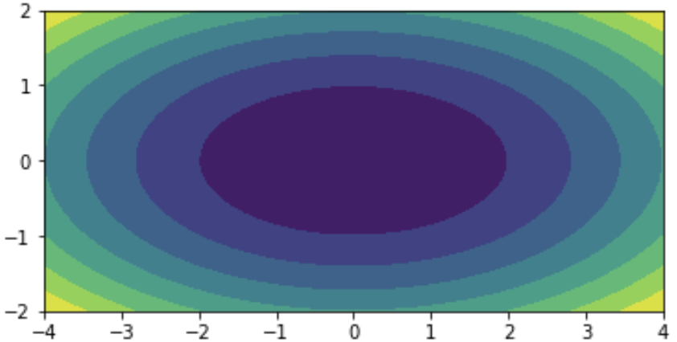

3. Föll af mörgum breytistærðum¶
3.1. Inngangur¶
Í þessum kafla vendum við okkar kvæði í kross, og fjöllum um stærðfræðileg hugtök og verkefni. Python verður samt ekki alveg skilið eftir útundan, heldur verða samhliða kynntar aðferðir til að fást við verkefni með Python.
Byrjað verður á umfjöllun um föll af tveimur breytistærðum, og tekin dæmi um hvernig hægt er að snúa jöfnum til að skrifa stærð (breytu) sem er fólgin í jöfnu sem fall af hinum stærðunum (breytunum). Næst eru sýndar aðferðir til að skoða útlit tvívíðra falla án sérstakrar tilvísunar í Python en 3.3 er síðan útskýrt hvernig hægt er að teikna myndir með Python. Þá eru hlutafleiður og stiglar á dagskrá, og fjallað er um aðferðir til að finna útgildi falla, bæði stærðfræðilega og með Python.
3.2. Föll af tveimur breytistærðum eða tvívíð föll¶
3.2.1. Stærðfræðileg skilgreining¶
Við höldum áfram að blanda svolítið saman stærðfræði og Python. Hér er sem sé stærðfræðikafli. Í dæmi 4 í kafla 2.4.7 var skilgreint fall sem hægt var að lágmarka til að finna jöfnu bestu línu:
\[S(a,b) = \sum_{i=1}^{50}(ax_i + b - y_i)^2\]
(líka var vísað í grein í Wikipediu). Þetta er dæmi um fall af tveimur breytistærðum, \(a\) og \(b\). Fyrir gefin gildi á þeim skilar fallið summunni af lóðréttum fjarlægðum frá punktunum \((x_i, y_i)\) að línunni \(y = ax + b\). Því minni sem þessi summa er, því betur fylgir línan punktasafninu. Í fyrrnefndu dæmi 4 var síðan útskýrt hvernig hægt er að ákvarða bestu línu með fallinu polyfit í Python. Síðar í þessum kafla munum við sjá hvernig hægt er að nota stigla og stærðfræði til þess að finna bestu línu.
En snúum okkur þá að stærðfræðilegri skilgreiningu á tvívíðu falli. Látum \(A \subseteq \mathbb{R}^2\) og \(f\) vera fall sem sendir stökin í \(A\) yfir í rauntölurnar,
Ef \((x,y) \in A\) varpast í \(z\) þá ritum við:
Oft táknar \(f(x,y)\) einhverja formúlu sem inniheldur \(x\) og \(y\), t.d. \(x + 3y\). \(A\) nefnist formengi fallsins \(f\) og \(f\) sjálft er fall af tveimur breytistærðum, eða tvívítt fall (function of two variables, two-dimensional function). Ef samband \(x\), \(y\) og \(z\) er svona má rita fallið hvort sem er:
Það er að sjálfsögðu hægt að nota aðra bókstafi en \(x\), \(y\), \(z\) og \(f\), t.d. þegar fallið lýsir einhverju raunverulegu sambandi eins og flatarmáli þríhyrnings,
eða meðalhita \(H\) á einhverjum stað á jörðunni með hnattstöðu (lengd og breidd) \(l\) og \(b\), \(H = h(l,b)\). \(H\) er líka dæmi um fall sem ekki er hægt að lýsa með einfaldri formúlu. Svo má nota breytur með vísa, t.d. \(y = f(x_1, x_2)\) eða (sbr. Python) \(y = f(x_0, x_1)\). Athugið líka að stundum er hafður sérstakur bókstafur fyrir fallið (eins og \(f\), \(F\), \(H\) í dæmunum) en stundum er bara talað um formúluna sem fall, t.d. gætum við sagt „fallið \(\,\sin(xy)\)“.
Æfing
Teiknið (einhvern) þríhyrning með grunnlínu 3 og hæð 2. Reiknið svo flatarmál hans með fallinu \(F\)
Hvaða formengi mætti (eða ætti að) hafa fyrir föllin \(F\) og \(H\) í dæmunum?
Ákvarðið \(g\) þannig að \(F(g,2) = 18\).
Rúmmál keilu er einn þriðji af flatarmáli grunnflatar sinnum hæð hennar. Flatarmál hrings með radíus \(r\) er \(r^2\pi\). Lýsið rúmmáli keilu með tvíðvíðu falli af hæð hennar \(h\), og radíus grunnflatar, \(r\).
Reiknið rúmmál keilu með radíus grunnflatar 2 cm og hæð 4 cm.
Æfing
Ef miðunarhorn fallbyssu (frá láréttu) er \(\theta\), upphafshraði kúlunnar er \(v\) og horft er framhjá loftmótstöðu, þá er lárétt vegalengd sem kúlan fer
\(d = \frac{\normalsize{v^2}}{\normalsize{g}} \sin 2\theta\)
þar sem \(g\) er þyngdarhröðunin, látum til einföldunar \(g = 10 \text{ m/s}^2\). Skrifið
\(d\) sem fall af \(v\) og \(\theta\)
\(v\) sem fall af \(d\) og \(\theta\)
\(\theta\) sem fall af \(d\) og \(v\)
3.2.2. Gröf og myndir af tvívíðum föllum¶
Á sama hátt og ferillinn \(\{(x,y) | y = f(x)\}\) er kallað graf einvíða fallsins \(f\), þá skilgreinum við graf tvívíðs falls \(f\) sem flötinn, eða yfirborðið \(\{(x,y,z) | z = f(x,y)\}\).
Til skoða gröf (útlit) tvívíðra falla eru ýmsar aðferðir. Ein algeng er að búa til hæðarlínumynd (contour plot) eins og hér er sýnd:
Mynd 3.1: Hæðarlínumynd með þremur hágildum¶
Hæðarlínur eru líka notaðar á landakortum og sýna hvar maður getur gengið í landslagi án þess að fara upp eða niður brekku, sem sé í sömu hæð yfir sjávarmáli. Þannig mynda þær t.d. lokaða ferla í kring um fjallstinda og lautir eða lægðir. Í gröfum tvíðvíðra falla er talað um hágildi (maxima) og lággildi (minima) eða hágildis- og lággildispunkta. Á myndinni að ofan sjást þrjú hágildi en ekkert lággildi.
Hér er landakort með hæðarlínum af Öskjuhlíð. Þeir sem eru kunnugir staðháttum sjá Veðurstofuhæðina og vatnstankinn, hólana í duftkirkjugarðinum og hljóðmanirnar við Bústaðaveg og Kringlumýrarbraut. Takið líka eftir að þar sem það eru engir litir og engar merkingar á hæðarlínunum þarf að þekkja vel til staðhátta til að vita að það er lægð (með tjörn) en ekki hæð þar sem merkt er með L.

Mynd 3.2: Hæðarlínukort af vef Reykjavíkurborgar¶
Á Wikipediu má skoða landakort með merktum hæðarlínum og við munum síðar í námskeiðinu búa til ýmsar slíkar myndir með Python og Matplotlib.
Það er líka hægt að gera margskonar öðruvísi myndir af gröfum tvívíðra falla. Hér er t.d. litakóðuð mynd (eða hæðarsvæðamynd), sem sýnir meðalhitafallið \(H\) úr síðusta grein:

Mynd 3.3: Meðalhiti ársins¶
og hér eru netmynd (mesh plot) og upplýst þrívíð mynd af tvívíða fallinu

Mynd 3.4: Tvær myndir af tvívíðu falli¶
Enn ein leið er svo að skoða þversnið af tvívíðu falli, en þá er önnur breytan fest í einhverju gildi og eingöngu skoðað hvernig fallið er háð hinni breytunni. Lítum t.d. á fallið \(f(x,y)\) hér á undan og festum \(y=1\). Þversniðsfallið verður þá:
og graf þess lítur svona út:

{kind=link}
Svo mætti teikna svona myndir fyrir fleiri gildi á \(y\) til að átta sig á hvernig tvívíða fallið lítur út.
3.3. Teikning tvívíðra falla með Python¶
Matplotlib hefur ýmsar skipanir til að teikna tvíðvíð föll: contour teiknar hæðarlínumyndir, contourf teiknar hæðarsvæðamynd (litakóðaða mynd) og plot_surface má nota til að teikna bæði netmynd og upplýsta þrívíða mynd. Auk þessara þriggja má nefna plot_wireframe, plot_trisurf og quiver en við bíðum með að fjalla um þau.
3.3.1. Hæðarlínur með skipuninni contour¶
plt.contour(x, y, z)
Teiknar hæðarlínur fyrir yfirborð sem lýsir tvívíðu falli \(f\) þar sem
\[z_{ji} = f(x_i, y_j), i = 0,1,2..., j = 0,1,2...\]Hér eru
xogyvigrar með gildum sem spanna svæðið sem teikningin nær yfir (t.d. úrnp.linspace) ogzer fylki með gildum \(f\) á svæðinu. Hér hefur stærðfræðilegur ritháttur verið notaður fyrir fylkið og vigrana. Til að gefa z gildi í Python mætti nota:(nx,ny) = (len(x), len(y)) z = np.zeros((ny,nx)) for j in range(ny): for i in range(nx): z[j,i] = f(x[i], y[j])Ástæða þess að vísað er í \(z_{ji}\) en ekki \(z_{ij}\) er sú að hefðin býður að vísa í dálka fylkis (sem ganga frá vinstri til hægri) á eftir línum þess (\(z_{ji}\) er í \(j\)-tu línu og \(i\)-ta dálki), en í tvívíðu hnitakerfi kemur \(x\)-hnit (líka frá vinstri til hægri) á undan \(y\)-hniti.
Í staðinn fyrir
for-lykkjur má líka nota comprehension.z = [[f(xi,yj) for xi in x] for yj in y]Þetta er bæði einfaldari kóði, og auk þess sleppur maður við að nota þessa svolítið ruglingslegu röð:
j,i.
plt.contour(x, y, z, stiki=gildi,…)
Teiknar hæðarlínur og setur ýmsa stillingarstika. Helstu stikar eru:
levelstala með fjölda hæðarlína sem teiknaðar eru, eða vigur með gildum fallsins sem hæðarlínurnar eru teiknaðar fyrir.
colorslitir hæðarlínanna (vigur, t.d. [‚r‘, ‚g‘, ‚b‘] til að lita línurnar rauða, græna, bláa, rauða, græna, bláa,…) eða litur.
linewidthslínubreiddir eða línubreidd
c = plt.contour(…)
plt.clabel(c, fmt=“%.0f“)
Merkir hverja hæðarlínu með gildi fallsins á henni. Líka má merkja t.d. aðeins neðstu 5 línurnar með
plt.clabel(c, c.levels[:5])
3.3.2. Dæmi um hæðarlínuteikningu¶
Eftirfarandi forrit teiknar hæðarlínur fallsins \(f(x,y) = x^2 + 4y^2\) á
rétthyrningnum \([-3,3] \times [-2,2]\). Takið eftir hvernig snið merkinga í
clabel er stillt með fmt-stika og einnig skrefin á merkingum y-áss með
plt.yticks.
def f(x,y): return x**2 + 4*y**2 plt.figure(figsize=(6,3)) x = np.linspace(-4,4,100) y = np.linspace(-2,2,50) z = np.array([[f(xi,yj) for xi in x] for yj in y]) c = plt.contour(x, y, z, 8, colors = 'brown') plt.clabel(c, fmt="%.0f"); plt.yticks(np.arange(-2, 3)) plt.axhline(c='k') plt.axvline(c='k');
Mynd 3.6: Kvaðratískt fall með lággildi í (0,0)¶
3.3.3. Hæðarsvæði með skipuninni contourf¶
plt.contourf(x, y, z, stiki=gildi…)
Teiknar tvívítt fall með því að lita svæði eftir gildi þess. Svæði sem eru á milli tveggja samliggjandi hæðarlína sem
plt.contourmundi teikna litast með sama lit ogcontourmundi lita neðri línuna með. Stikarnirx, y, zeru eins og lýst er fyrircontour, og stillingarstikarnirlevelsogcolorssömuleiðis. Hinsvegar er enginnlinewidthsstiki og ekki hægt að notaclabel. Til að fá bæði lituð svæði og teiknaðar línur á milli þeirra má kalla fyrst ácontourfog svocontourmeð sömu stika.Þessi mynd fæst með
contourfí forriti sem er svipað og 3.1:Mynd 3.7: Hæðarsvæðamynd¶
Hægt er að fá myndir þar sem litirnir breytast samfellt (ekki ósvipað og í heimskortinu hér að framan) með því nota hátt gildi á
levelsstika, t.d. á bilinu 100–200.
3.3.4. Netmyndir með plot_surface¶
Til að teikna netmyndir þarf smá undirbúning: Í fyrsta lagi þarf að flytja inn
klasann (class) Axes3D í einingunni mpl_toolkits.mplot3d með skipuninni:
from mpl_toolkits.mplot3d import Axes3D,
í öðru lagi þarf að búa til fylki X og Y sem spanna teiknisvæðið
með skipuninni
(X,Y) = np.meshgrid(x,y)
þar sem x og y eru vigrar eins og í grein 3.3.1 og í þriðja
lagi þarf að smíða sérstaklega þrívítt hnitakerfi (ása; axes) til að teikna í,
með skipuninni:
ax = plt.subplot(projection = '3d')
Teikniskipunin plot_surface sem teiknar sjálfa netmyndina er svo aðferð (method) í ásunum ax þannig að það er kallað á hana með ax.plot_surface. Þetta er sýnt er í eftirfarandi dæmi, sem teiknar fallið sem gefið er aftast í grein 3.2.2. Takið eftir að eins og þegar einvíð föll voru teiknuð þarf að nota np-útgáfur af innbyggðu föllunum, sem sé np.sqrt en ekki math.sqrt, til að fallsgildi allra staka í vigrum reiknist í einu lagi.
def f(x,y): r = np.sqrt(x**2 + y**2) return (1 + 4*np.sin(r))/(1 + 4*r) x = y = np.linspace(-10,10,30) Z = np.array([[f(xi,yj) for xi in x] for yj in y]) (X,Y) = np.meshgrid(x, y) plt.figure(figsize=(12,5)) ax = plt.subplot(projection='3d') ax.plot_surface(X, Y, Z, edgecolor='k', shade=False, color='w');
Mynd 3.8: Matplotlib netmynd¶
Athugið
Tæknilega eru ásarnir ax hlutur (object) af klasatagi (class type)
Axes3DSubplot, eða með öðrum orðum eintak af taginu Axes3DSubplot,
sem er klasi sem erfist frá klasanum Axes3D sem aftur erfist frá
Axes. Þegar klasi er fluttur inn eru skipanir í honum framkvæmdar og því
getur innflutningur á klösum haft ýmsar hliðarverkanir. Að flytja inn klasann
Axes3d hefur þá hliðarverkun að plt.subplot ræður við að smíða þrívíða
ása.
3.3.5. Upplýstar myndir með plot_surface¶
Skipunin sem notuð er til að teikna netmyndir, plot_surface nýtist líka til
að teikna upplýstar myndir. Eftirfarandi mynd fæst með forriti sem er eins og
3.2 fyrir utan að aftasti stikinn sem linspace fær er
100 og síðustu línunni er skipt út með:
ax.plot_surface(X,Y,Z,color='wheat',rcount=100,ccount=100,antialiased=False)

Mynd 3.9: Upplýst hattfall¶
3.4. Hlutafleiður¶
3.4.1. Skilgreining hlutafleiðu¶
Ef \(f(x,y)\) er fall af \(x\) og \(y\) þá skilgreinum við hlutafleiðu (partial derivative) \(f\) með tilliti til (m.t.t.) \(x\) í punktinum \((a,b)\) sem markgildið (limit)
og hlutafleiðu \(f\) m.t.t. \(y\) í \((a,b)\) sem
(ef þessi markgildi eru til). Þetta þýðir að hlutafleiða m.t.t. annarrar breytunnar er eins og venjuleg afleiða (derivative) af þverskurðarfallinu (cross section function) sem fæst með því að halda hinni breytunni fastri: Ef \(g(x) = f(x,b)\) þá gildir
Ef markgildin sem skilgreina hlutafleiðurnar eru bæði til er sagt að \(f\) sé diffranlegt (differentiable) í \((a,b)\), en annars er það ódiffranlegt þar.
Hlutafleiðurnar tvær af \(f\) skilgreina tvö ný föll, \(f_x\colon A \to \Bbb{R}\) og \(f_y\colon A \to \Bbb{R}\). Gera þarf greinarmun á því að reikna hlutafleiðu \(f\), sem felur í sér að finna formúlur þessara falla fyrir almenn \(x\) og \(y\), og að reikna hlutafleiðu í tilteknum punkti, en þá er svarið tiltekin tala eða gildi.
Hlutafleiður koma víða við sögu í stærðfræði og stærðfræðilegum greinum. Í fyrsta lagi má nota þær í stærðfræðigreiningu til að finna lággildi og hágildi, normalvigra (sem eru hornréttir á yfirborð), snertiplön og Taylor-nálganir, og svo eru þær grunnurinn í svonefndum hlutafleiðujöfnum, sem eru mikið notaðar í til að smíða stærðfræðileg líkön t.d. í eðlisfræði, verkfræði, jarðeðlisfræði og hagfræði.
Sýnidæmi
Látum \(f(x,y) = x^2y + 2y\). Þá er
(þar sem \(y\) er fasti virkar þetta eins og við séum að diffra t.d. \(x^2\cdot 3 + 2\cdot 3\)). Á sama hátt er
Hlutafleiðan af \(f\) m.t.t. \(x\) í punktinum \((3,5)\) fæst svo með því að stinga inn: \(f_x(3,5) = 2\cdot 3\cdot 5 = 30\).
Athugið
Rifjum upp helstu reglur um venjulega afleiðu ($a$ í reglunum er fasti):
Æfing
Reiknið bæði \(f_x\) og \(f_y\) ef \(f(x,y) = x^2 + y\).
Diffrið fallið \(x \sin(y)\) bæði með tilliti til \(x\) og \(y\).
Lát \(f(x,y) = (1-x)^2 + (y-x^2)^2\). Ákvarðið fallið \(f_x(x,y)\) og gildið \(f_y(1,2)\).
3.4.2. Aðrir rithættir fyrir hlutafleiðu¶
Stundum viljum við diffra fall sem ekki hefur verið gefið nafn, í raun að diffra formúlu. Ef diffra skal formúlu m.t.t. \(x\) má setja \(D_x\) framan við hana, t.d.
Ef það er gert má setja lóðrétt strik með lágvísi aftan við til að sýna að reikna eigi hlutafleiðuna í tilteknum punkti:
Annar algengur ritháttur er að nota „rúnnað d“ (stundum borið fram del), t.d.
Slíkan rithátt má auðvitað líka nota þótt fallið hafi fengið nafn. Þannig er \(D_y f(x,y) = f_y(x,y)\). Ef ritað hefur verið \(z = \text{formúla}\), t.d. \(z = xy\) þá er oft litið svo á, þegar tekin er hlutafleiða, að \(z\) sé jafngild formúlunni, t.d.:
Æfing
Finnið eftirfarandi hlutafleiður:
Æfing
Látum \(d\) vera drægni fallbyssu eins og í æfingunni aftast í grein 3.2.1,
\(d = \frac{\normalsize{v^2}}{\normalsize{g}} \sin 2\theta\)
þar sem \(v\) er skothraðinn, \(\theta\) er horn miðað við láréttan flöt og \(g\) er þyngdarhröðunin (við notum \(g = 10 \text{m/s}^2\)).
Ákvarðið \(\dfrac{\partial\normalsize{d}}{\partial\normalsize{v}\vphantom{\theta}}\) og \(\dfrac{\partial\normalsize{d}}{\partial\normalsize{\theta}}\)
Fyrir gefinn hraða \(v\) verður drægnin að einvíðu falli, \(d = f(\theta)\), og hlutafleiðan m.t.t. \(\theta\) verður jöfn venjulegu afleiðunni \(f'(\theta)\). Þá má finna hámarksdrægni fallbyssunnar með því að leysa \(f'(\theta) = 0\). Finnið \(d_\text{max}\) ef \(v = 200 \text{ m/s}\).
3.5. Stigull¶
Lát \(f\) vera tvívítt fall, diffranlegt í punkti \((a,b)\), og látum \(v\) vera vigur sem stefnir í þá átt sem \(f\) vex hraðast. Venjuleg afleiða af einvíðu falli í punkti \(a\) er hallatala (slope) snertils (tangent) í punktinum, og á sama hátt mælir stigull (gradient) tvívíðs falls í \((a,b)\) hallatölu snertils í \((a,b)\). En stigullinn er hinsvegar vigur en ekki tala eins og afleiða einvíða fallsins.
SKILGREINING. Stigull falls \(f\) í punkti \((a,b)\) er vigur sem stefnir í þá átt sem fallið vex hraðast, og lengd hans er jöfn hallatölu snertils við graf fallsins sem stefnir í sömu átt.
Stigullinn mælir sem sé hve bratt graf fallsins er og átt mesta bratta. Hægt er að skoða þverskurðarfall eftir línu sem liggur í bröttustu stefnuna og lengd stigulsins verður afleiða þess falls. Ef fallið hefur engan halla er stigullinn núll.
Hér er mynd sem varpar ljósi á hugtakið stigul, og í Wikipediugreininni um stigla má skoða fleiri myndir.
{kind=link}
3.5.1. Ritháttur og orðanotkun¶
Stigullinn af \(f\) er oftast táknaður með \(\nabla f\) en stundum með \(f'\), og stigull í \((x,y)\) er þá \(\nabla f(x,y)\) eða \(f'(x,y)\). Stigullinn er dæmi um svonefnt vigursvið (vector field), en það er fall \(\Bbb R^2 \to \Bbb R^2\) sem sendir sem sé punkta í planinu yfir í vigra. Venjuleg tvívíð föll eru líka stundum kölluð skalarsvið (scalar field), en skalar er annað orð yfir tölu. Þetta orðfæri er einkum notað í eðlisfræði, en líka í stærðfræðigreiningu sem er einmitt oft beitt í eðlisfræði. Stundum er líka talað um vigurgilt fall á \(\Bbb R^2\) (vector-valued function on \(\Bbb R^2\))
3.5.2. Tvívíð keðjuregla og tengsl stiguls og hlutafleiða¶
Einvíða keðjureglan segir að afleiða \(f(g(x))\) sé \(f'(g(x))g'(x)\) (sjá lista aftast í grein 3.4.1). Þessi regla er sönnuð í stærðfræðigreiningu, sjá t.d. hér. Á Khan Academy eru frekari útskýringar og þar er líka fín umfjöllun um tvívíðu keðjuregluna, þar með talið sönnun á henni.
SETNING (tvívíð keðjuregla).
\[D_t f(x(t),y(t)) = f_x(x(t),y(t))x'(t) + f_y(x(t),y(t))y'(t)\]
Stigull er síðan nátengdur hlutafleiðum eins og þessi setning segir:
SETNING. Stigull diffranlegs falls \(f\) í \((a,b)\) er vigurinn með hlutafleiðum \(f\), þ.e.a.s.
\[\begin{split}\nabla f(a,b) = \begin{pmatrix}f_x(a,b) \\ f_y(a,b)\end{pmatrix}\end{split}\]
Við bregðum svo út af vananum, að sleppa flestum sönnunum, og sönnum þessa reglu. Með sönnuninni fylgir líka skýringarmynd.
SÖNNUN SETNINGAR. Látum \(p = (a,b)\) og \(u\) vera almennan vigur útfrá \(p\) með lengd 1. Svo skoðum við þverskurð af fallinu í stefnu \(u\). Látum \(g\) vera fallið í þeim þverskurði, sem sé \(g(t) = f(p+tu)\). Hallatala snertils í þessa stefnu er g‘(0) og með því að nota tvívíðu keðjuregluna fæst:
\[\begin{split}g'(t) &= D_t f(p + tu)\\ &= D_t f(a + u_1 t, b + u_2 t) \\ &= f_x(p + tu) u_1 + f_y(p + tu) u_2\\ g'(0) &= (f_x(p), f_y(p)) \cdot u \\ &= h \cdot u\end{split}\]þar sem \(h = (f_x(p), f_y(p))\) og \(h \cdot u\) táknar innfeldi \(h\) og \(u\) (sbr. kafla 2.2.10).

Næst er notuð regla um innfeldi sem margir kannast við, nefnilega að innfeldi tveggja vigra fáist með því að margfalda saman lengdir þeirra og kósínus af horninu milli þeirra. Reglan verður sönnuð í æfingu í kafla 4.4.5 en hún segir sem sé:
\[x\cdot y = |x| \cdot |y| \cos \theta\]Þetta gefur okkur að snertilhallinn er \(g'(0)\) = \(|h|\cdot |u|\cos \theta\) = \(|h|\cdot 1\cdot \cos\theta\) = \(|h|\cos \theta\) þar sem \(\theta\) er hornið á milli \(h\) og \(u\). Þessi halli verður stærstur þegar \(\theta\) = 0 (því þá er kósínusinn 1, en annars er hann minni), það er að segja þegar \(u\) stefnir í sömu átt og \(h\). En sú mesta bratta stefna er einmitt stefna stigulsins, og svo gildir auk þess að stigullinn hefur lengd sem er þessi mesti bratti, og niðurstaðan er að stigullinn hlýtur að vera jafn \(h\), eins og sanna átti.
Sýnidæmi
Finnum stigul fallsins
fyrst í almennum punkti \((x,y)\) og síðan í punktinum \((2,1)\). Hlutafleiður \(f\) eru \(f_x = 2x+y-3\) og \(f_y = x + 2y\) og almenni stigullinn er því
Ef við látum \(x=2\) og \(y=1\) fæst:
3.5.3. Stefnuafleiða¶
Snertilhallinn sem kom við sögu í sönnuninni hér á undan hefur nafn, og er kallaður stefnuafleiða. Hana má skilgreina þótt \(u\) hafi ekki lengd 1, nefnilega:
SKILGREINING. Stefnuafleiða diffranlegs falls \(f\) í stefnu vigurs \(u\) í punkti \(p\) er hallatalan sem fæst ef farið er frá \(p\) úteftir \(u\), nánar tiltiltekið afleiða fallsins \(g(t) = f(p + tu)\) í 0.
Og ef \(u\) hefur lengd 1 þá er stefnuafleiðan hallatala snertils við graf fallsins í \(p\) sem stefnir í sömu átt og \(u\). Bláa línan \(T\) á eftirfarandi mynd sýnir umræddan snertil.
{kind=link}
Stefnuafleiðan er táknuð með \(f'(p; u)\). Svo er líka hægt að skilgreina stefnuafleiðuna með formúlu, sem minnir á formúluna sem venjuleg afleiða er skilgreind með:
Næsta setning gefur okkur aðferð til að reikna stefnuafleiðu og sönnun hennar er í raun þegar komin, sem hluti af sönnuninni hér á undan (í grein 3.5.2). Hún er nefnilega innfeldi stigulsins í \(p\) og stefnuvigursins \(u\):
SETNING (tengsl stefnuafleiðu við stigul). \(f'(p;u) = \nabla f(p) \cdot u\)
Stefnuafleiðan er sem sé innfeldi Ein afleiðing af þessari setningu er að hlutafleiður \(f\) eru stefnuafleiður í stefnu einingavigranna, \((1,0)\) og \((0,1)\), en um einingavigra verður fjallað nánar í kaflanum um línulega algebru.
Sýnidæmi
Finnum stefnuafleiðu fallsins
út eftir \(u = (1, 3)\) í punktinum \((2,1)\). Skv. síðasta sýnidæmi er \(\nabla f(2,1) = (2,4)\) og stefnuafleiðan er þessvegna
{kind=link}
3.5.4. Teikning stigla í Python¶
Eins og útskýrt var að framan er stigull vigur sem stefnir upp bröttustu brekkuna, og hann er því lengri sem brattinn er meiri. Ein afleiðing þessa er að stigullinn verður hornréttur á hæðarlínur fallsins.
Matplotlib fallið quiver má nota til að teikna örvarit: örvar í rétthyrndu
neti sem sýna vigursvið. Örvarnar hafa rétta stefnu, en lengdir þeirra eru
skalaðar sjálfkrafa, þó þannig að hlutfallslegar lengdir haldi sér. Hér fylgir
dæmi um teikningu af hæðarlínum og stigli fallsins
sem teiknað var í grein 3.3.2. Eins og fyrr þarf svolítinn undirbúning.
{kind=link}
def f(x,y):
return x**2 + 4*y**2
def fx(x,y):
return 2*x
def fy(x,y):
return 8*y
X = np.linspace(-4,4,50)
Y = np.linspace(-2,2,25)
X3 = X[::3]
Y3 = Y[::3]
z = np.array([[f(x,y) for x in X]
for y in Y])
u = np.array([[fx(x,y) for x in X3]
for y in Y3])
v = np.array([[fy(x,y) for x in X3]
for y in Y3])
c = plt.contour(X, Y, z, 12)
ax = plt.gca()
ax.set(aspect = 'equal',
yticks = np.arange(-2,3,1))
plt.clabel(c, fmt="%.0f");
plt.quiver(X3, Y3, u, v);
{kind=link}
Athugið
Til að skoða lista yfir alla eiginleika (properties) sem hægt
er að stilla með ax.set má gefa skipunina plt.getp(ax)
Æfing
Reiknið (á blaði) stigul falls Rosenbrocks
\[f(x_0, x_1) = (1 - x_0)^2 + 100(x_1 - x_0^2)^2\]Reiknið í framhaldi \(\nabla f(-1,1)\), \(\nabla f(0,1)\) og \(\nabla f(1,1)\). Athugið hvort niðurstöðurnar rími við eftirfarandi hæðarlínumynd af fallinu, t.d. með því að rissa upp á blaðið stiglana þrjá og hæðarlínur í grennd við þá (styttið þá samt svo þeir komist fyrir á blaðinu..
{kind=link}
3.6. Útgildi tvívíðra falla¶
3.6.1. Hágildi og lággildi¶
Tvívítt fall \(f\colon A\to \Bbb R\) er sagt hafa víðvært hágildi (global maximum) í punkti \(p = (x_0, y_0)\) ef gildi fallsins þar er stærra en eða jafnt og gildi þess í öllum öðrum punktum formengisins \(A\), og á sama hátt hefur \(f\) víðvært lággildi (minimum) í \(p\) ef gildið þar er minna en eða jafnt og gildið allsstaðar annarsstaðar. Ef til er grennd um \(p\) þannig að \(f(p) \geq f(x,y)\) fyrir alla punkta \((x,y)\) í grenndinni þá er hágildið staðbundið (local). Staðbundið lággildi er skilgreint á samsvarandi hátt. Ef gildi falls er hvergi (í \(A\) eða grenndinni) jafn hátt (lágt) og í \(p\) er hágildið (lággildið) kallað strangt (strict). Samheiti yfir há- og lágildi er útgildi (extremum).
Við höfum þegar séð ýmsar hæðarlínumyndir með há- og lággildum, t.d. í myndum 3.1, 3.6 og 3.12.
Ákvörðun útgilda falla hefur margskonar hagnýtingu, og sérstök undirgrein hagnýtrar stærðfræði, töluleg bestunarfræði (numerical optimization), fjallar um aðferðir til þess að finna þau. Stundum snýst verkefnið um að hámarka hagnað eða lágmarka kostnað, en stundum er markmiðið að finna stika líkans sem nálga gögn vel.
3.6.2. Útgildi fundin með því að leysa jöfnur¶
Á sama hátt og útgildi einvíðra falla einkennast af því að afleiðan þar er núll, þá einkennast útgildi tvívíðra falla af því að stigullinn þar er núll. Lausnir jöfnunnar
gefa þá útgildin en auk þess söðulpunkta (saddle points) sem sum föll hafa. Það eru punktar þar sem stigullinn er núll, og þannig að til er leið frá þeim með vaxandi \(f\)-gildum og önnur með minnkandi \(f\)-gildum. Dæmi er fallið \(f(x,y) = 10 + x^2 - y^2\) sem sýnt er á eftirfarandi mynd:
Mynd 3.13: Fall með söðulpunkti¶
Þar sem báðar hliðar í jöfnunni að ofan eru vigur felur lausn hennar í sér að leysa saman tvær jöfnur í tveimur óþekktum (\(x\) og \(y\)):
Stundum er hægt að leysa þessar jöfnur með algebru/stærðfræðigreiningu, en oftar en ekki þarf að beita tölulegum aðferðum. Eftir að lausnirnar eru fundnar þarf svo að flokka þær í hágildi, lággildi og söðulpunkta.
Sýnidæmi
Ákvörðum útgildispunkta fallsins
Stigullinn er \(\nabla f = (2x + y - 3, x + 2y)\) svo við þurfum að leysa jöfnurnar:
Smá útreikningar gefa nú \(x = 2\) og \(y = -1\). En er þetta lággildi, hágildi eða söðulpunktur? Svarið er lággildi, og það er m.a. hægt að sjá útfrá því að þetta er eina lausnin, og að fallið vex upp úr öllu valdi ef x og y eru látin stefna á óendanlegt.
{kind=link}
Æfing
Smíða skal loklausan kassa sem tekur 500 \(\text{cm}^3\) (sem sé hálfan lítra) úr blikkplötum þannig að sem minnst blikk sé notað. Ákvarðið hæð hans, lengd og breidd með eftirfarandi aðferð: Kallið lengdina \(x\) og breiddina \(y\). Þá verður hæðin \(h = 500/(xy)\). Látið nú \(f(x,y)\) = flatarmál blikksins sem þarf, finnið formúlu fyrir \(f\) og lágmarkið með því að leysa jöfnurnar sem fást þegar hlutafleiður \(f\) eru settar núll.
{kind=link}
Athugið
Fyrirlestrarnótur í Stærðfræðigreiningu 2 eru með ýmislegt efni og myndir sem gæti gagnast við að skilja tvívíð föll, hlutafleiður og stigla betur
3.7. Margvíð föll¶
3.7.1. Skilgreining og dæmi¶
Rifjum upp að tvívítt fall er fall \(f\colon A \to \Bbb{R}\) þar sem \(A \subseteq \mathbb{R}^2\). Á sama hátt er \(n\)-vítt fall fall:
Við getum tekið dæmi um hitastigfallið H á mynd 3.3. Það væri hægt að hugsa sér fall til að tákna meðalhita ekki bara við yfirborð, heldur líka ofar, t.d. í 10 m hæð (eða 1 km). Almennt mætti skilgreina þrívítt fall:
(þó það væri líklega ansi erfitt að ákvarða gildi \(H\) allsstaðar). Við gætum líka hugsað okkur að ákvarða jöfnu bestu parabólu með því að lágmarka fallið
(þá er gildir \(S\colon \mathbb{R}^3 \to \mathbb{R}\)). Það er mun erfiðara að búa til myndir af margvíðum föllum en tvívíðum. Helsta aðferðin er að sýna nokkur þverskurðarföll: Við gætum t.d. sýnt sérstaka mynd af meðalhitanum við yfirborð, í 100 m hæð, 200 m hæð o.s.frv. Veðurfræðingar skoða stundum veðurkort í jafnþrýstiflötum, t.d. 500 millibara fletinum.
3.7.2. Viðfang skrifað sem vigur¶
Stakið \(x\) í formenginu sem margvítt fall varpar úr er vigur með \(n\) stökum:
og ef þetta stak varpast t.d. í 5 má rita viðföng þess annaðhvort sem margar tölur (stökin í vigrinum) eða einn vigur, sem sé
Á eftirfarandi mynd væri \(X \subseteq \mathbb{R}^n\), \(Y = \mathbb{R}\) og \(f(x) = 5\).
Þegar unnið er samhliða með stærðfræði og Python getur líka verið þægilegt að byrja að telja í 0. Svona vigur-ritháttur fyrir viðfangið er því algengari sem \(n\) er stærra. Ef \(n\) er 2 eða 3 er oft ritað \(f(x,y)\) eða \(f(x,y,z)\) en fyrir math:n geq 4 er algengast að nota \(f(x)\) og láta \(x\) vera vigur, og það er reyndar oft gert líka fyrir \(n=2\textrm{ eða }3\). Reyndar höfum við nú þegar nýtt okkur þennan möguleika, í sönnuninni í kafla 3.5.2 þar sem við skrifuðum \(p\) í stað \((a,b)\).
3.7.3. Margvíðir stiglar¶
Stigull af \(n\)-víðu falli er \(n\)-vigur:
Eins og fyrir tvívíð föll segir stigullinn okkur í hvaða átt fallið vex hraðast. Við getum hugsað okkur fugl á flugi sem er kalt, hann gæti e.t.v. haft vit á að fljúga í stefnu stiguls þrívíða fallsins \(H\) sem talað var um í greinininn hér á undan. Margvíðir stiglar verða aftur á dagskrá í kafla 4.3.
[Efni í vinnslu]